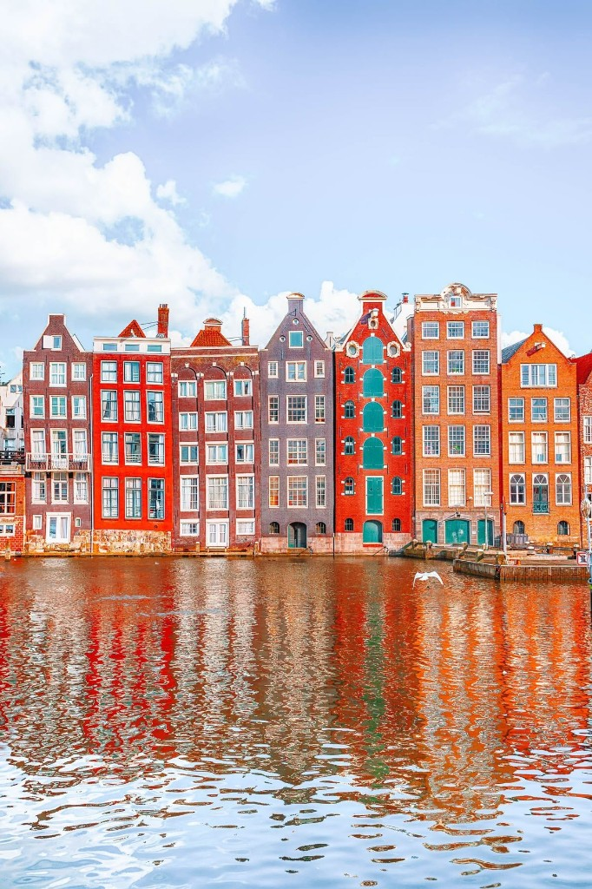

The canal houses look almost theatrical: stepped gables, tall windows, each facade telling a slightly different century. They’re narrow for reasons that belong to old tax logic and tight plots, but the effect is pure Amsterdam—vertical, proud, a little eccentric.
We don’t need a lecture tour to enjoy them; it’s enough to walk, look up, and notice how the light changes from one bridge to the next.